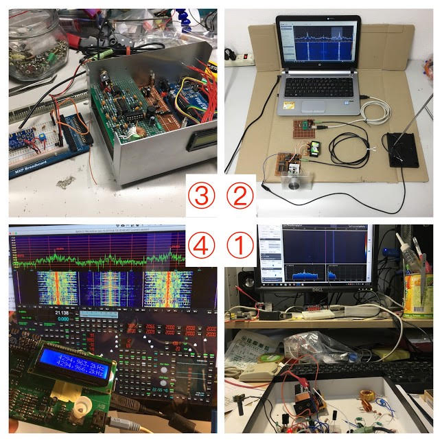

DIY 真空管耳機擴大機業餘專案
🎯 作品集
載入中...

📄 學術履歷
🎓
學歷
2022 - 現在
國立臺灣科技大學
應用科技研究所 醫學工程組 博士生
研究主題：智慧枕墊系統 / 打鼾檢測與控制
應用科技研究所 醫學工程組 博士生
研究主題：智慧枕墊系統 / 打鼾檢測與控制
2019 - 2022
碩士
待補資料
待補資料
💼
經歷
2015/11 ~ 現在
泰電電業股份有限公司
DIY套件研發、科技課程研發、雜誌專欄作者
• 雜誌/期刊出版業
• 台北市中正區
DIY套件研發、科技課程研發、雜誌專欄作者
• 雜誌/期刊出版業
• 台北市中正區
2014/1 ~ 2015/11
貝齊科技（1年11個月）
特殊傳輸協定研發、韌體開發、iOS App開發、系統整合
• 資料儲存媒體製造
• 台北市大同區
• C / 韌體程式設計 / MCU / Linux / ARM
特殊傳輸協定研發、韌體開發、iOS App開發、系統整合
• 資料儲存媒體製造
• 台北市大同區
• C / 韌體程式設計 / MCU / Linux / ARM
2006/2 ~ 2013/8
康定股份有限公司（comdek）（7年7個月）
多參數生理監視器、醫療器材、醫療儀器硬軟體規劃與開發
• 醫療器材製造業
• 新北市新店區
• GNU C / Firmware / analog / arm / signal process / biomedical engineering
多參數生理監視器、醫療器材、醫療儀器硬軟體規劃與開發
• 醫療器材製造業
• 新北市新店區
• GNU C / Firmware / analog / arm / signal process / biomedical engineering
1999/1 ~ 2000/12
德緣儀器（2年）
自動控制相關研發工作、產品維修、產品製造
• 自動控制相關業
• 新竹市
自動控制相關研發工作、產品維修、產品製造
• 自動控制相關業
• 新竹市
🛠
專業技能
硬體：
PCB電路板設計
新產品研發與測試
電路板佈局規劃
硬體系統研發設計
電子電路設計
類比電路設計
數位電路分析設計
電機設備研發
前端類比系統設計
感測器應用
韌體/軟體：
韌體工程開發
韌體程式設計
微電腦軟體設計
嵌入式系統
單晶片 (8051/AVR/ARM/STM32)
Linux Kernel
Linux Device Driver
uClinux
程式語言：
C
C++
Python
Perl
JavaScript
Assembly
擅長工具：
STM32
Raspberry Pi
Debian Linux
FreeBSD
MySQL
Dreamweaver
FinalCut
Inkscape
📜
認證資格
醫療儀器 CE 認證
ISO 13485
FDA 認證
TFDA 認證
GMP
📝
自傳
在comdek.com公司工作七年，負責生理監視器與醫療儀器的硬軟體規劃開發，專長嵌入式系統、單晶片、PCB Layout、感測器、類比與數位信號取樣處理、醫療儀器CE/ISO/GMP/TFDA/FDA認證。
接著在貝齊科技公司工作將近兩年，該公司創辦人原本是以合夥人的方式尋找夥伴，我同意創辦人的理念於是與之共同打拼，無奈資源耗盡。
本人在硬體與軟韌體方面自認接觸頗多，在comdek公司負責的是生理監視器的整體軟硬體開發，使用uClinux系統以及linux programming方式開發應用程式。生理監視器主要是將生理訊號經過類比信號處理與類比數位轉換，透過嵌入式系統顯示在LCD顯示器上。
在貝齊科技的工作是負責嵌入式系統的整合與新功能的開發，該公司的產品是智慧型手機平板的備份系統，需要大量使用linux programming的技能，也包括各種型態第三方軟體的跨平台移植與改寫（c、python、perl），以及Linux核心的效能調校和Linux device driver的設計。
由於本人的職涯過程是軟硬體兼顧的均衡發展，因此對於程式設計、韌體設計以及硬體設計都能以廣泛的視野來解決問題，也才不會陷入見樹不見林的困境。
🏥
專案成就 - 生理監視器
多參數生理監視器，常見於醫院使用，本人於生涯之中長時間從事生理監視的研發，內容包含：
• 生理訊號處理
• 嵌入式硬體佈局
• 驅動程式撰寫
• 人機介面設計
🔧
業餘專題